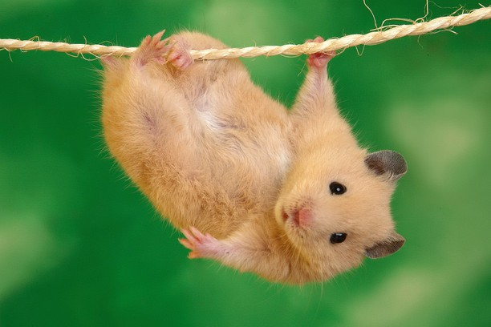
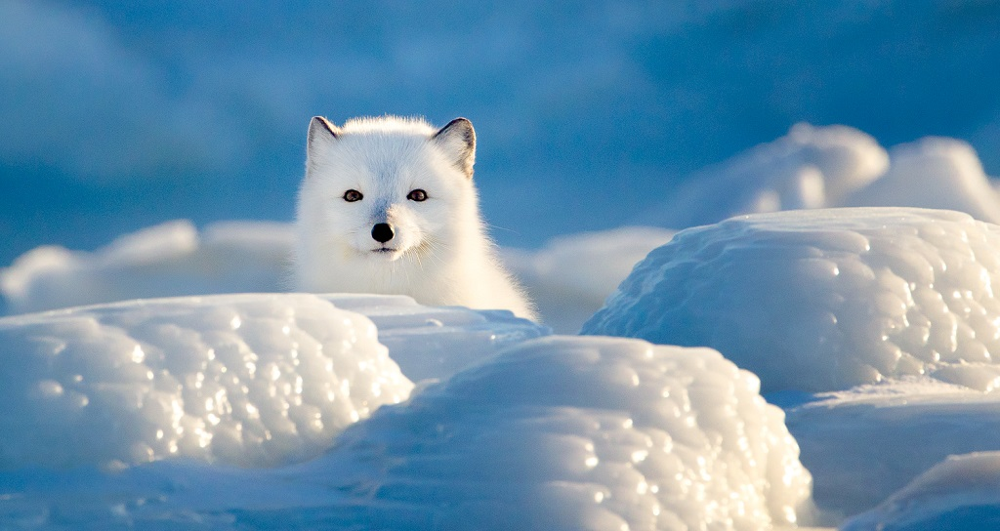

Kitten with a flower
08/21
53 Likes
It's true that cats love to sleep, and they also enjoy periods of time alone hidden away in cozy corners, but there's much more to cats than the popular perception of aloof behavior suggests.
Cute dogs
09/21
78 Likes
Dogs greet one another with a familiar pattern, circling one another and sniffing each others muzzle, then genital area. Ideally this is a calm interaction as the dogs learn about one another through their sense of smell.
Funny hamsters
08/21
105 Likes
There are about 20 hamster species and they are found in a variety of habits, from deserts and plains to sand dunes and agricultural fields across Europe, Asia, and Northern Africa.
Giraffe chilling
08/21
85 Likes
Giraffes only need to drink once every few days. Most of their water comes from all the plants they eat.